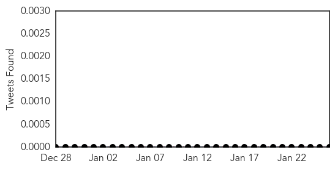

Pertussis
30-Day Web Trend
0 alerts, 0 warnings

30-Day Twitter Trend
0 alerts, 0 warnings

Article Locations

Article Confidences

Top Articles:
Top Tweets:
-
No tweets found for Jan 26, 2015
Hepatitis
30-Day Web Trend
0 alerts, 0 warnings

30-Day Twitter Trend
0 alerts, 0 warnings

Article Locations

Article Confidences

Top Articles:
- 0.829
- The Kathmandu Post
- 0.708
- Royal Prince Alfred Hospital contacts hundreds of women after vaccine fault
- 0.693
- Royal Prince Alfred Hospital contacts hundreds of women after vaccine fault
- 0.575
- Royal Prince Alfred Hospital admits maternity ward fridge may have damaged vaccines
- 0.501
- NSW hospital vaccine inquiry under way
Top Tweets:
-
No tweets found for Jan 26, 2015